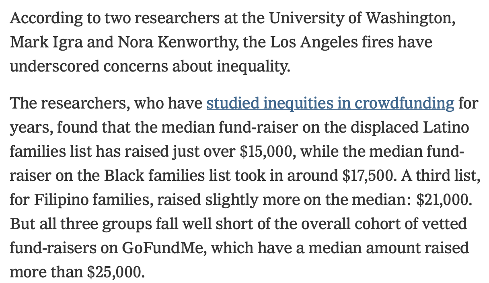
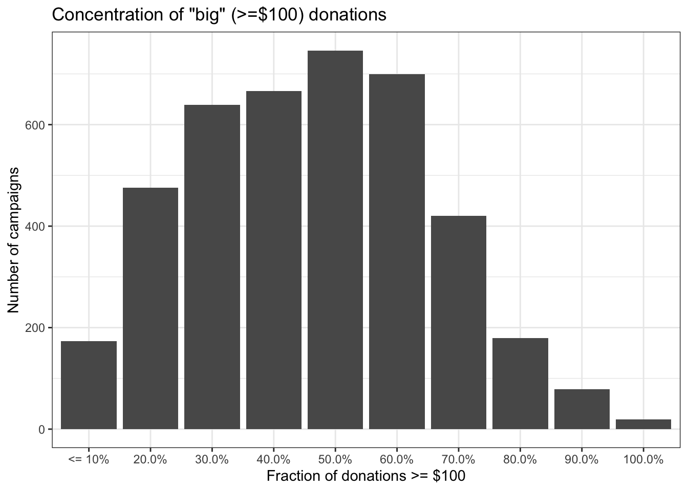
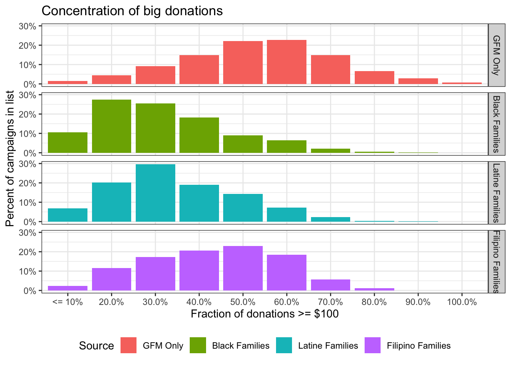
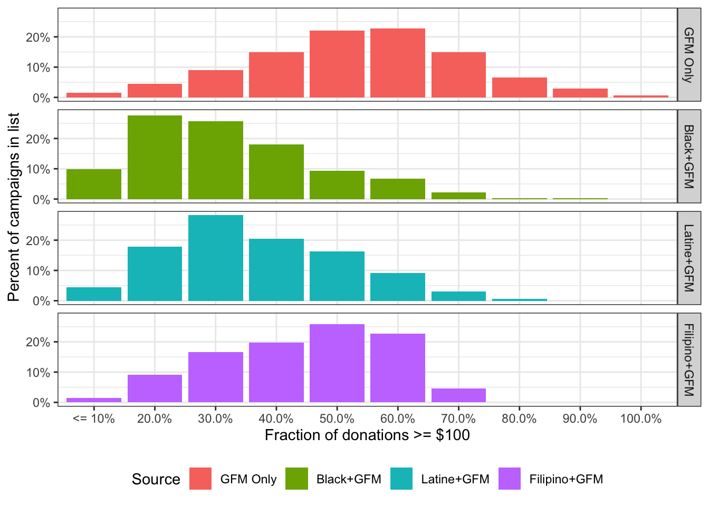
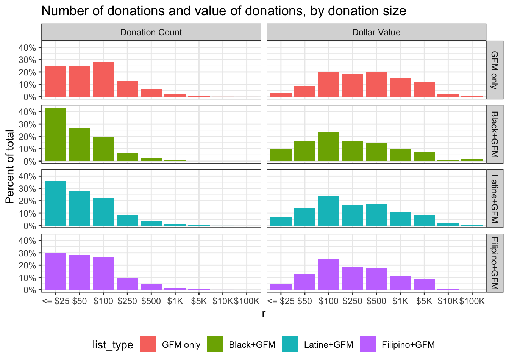

| list | N | Med. Goal | Med. Raised | Mean Raised | Med. Count | Mean Count |
|---|---|---|---|---|---|---|
| GFM | 3564 | $35,000 | $25,678 | $34,933 | 211.0 | 298.5 |
| Filipino | 96 | $29,000 | $21,000 | $27,427 | 211.0 | 259.4 |
| Black | 832 | $30,000 | $17,598 | $25,706 | 238.5 | 354.5 |
| Latine | 599 | $25,000 | $15,150 | $21,513 | 179.0 | 252.8 |
GoFundMe and Network Financial Capacity (Again)
The GoFundMe fundraisers for the LA Fires show a familiar pattern of racial/ethnic inequality
On Sunday, the New York Times published a very positive article on GoFundMe and it’s role in helping folks displaced by the LA fires. It notes that partly as an attempt to deal with the known issues with crowdfunding, various communities have started their own lists of people who need help: There are Community Lists for Displaced Black Families, Displaced Latine Families, Displaced Filipino Families and Displaced Disabled Folks. The article references a paper by Nora Kenworthy and I, and the fact that people on those lists did worse than the typical campaign on the GoFundMe Fires Page.

Those numbers are correct, but they chose not to report on the likely main reason for the discrepancy: the fact that people on the community lists were less likely to receive large donations than the other campaigns on the main GoFundMe page. In 2022 Social Forces published my paper Donor Financial Capacity Drives Racial Inequality in Medical Crowdsourced Funding that pointed towards what I called “Network Financial Capacity” as a big driver of inequality in crowdfunding campaigns. When homophily in social networks combines with racial wealth and income inequality – itself a product of current & past racism – crowdfunding replicates inequality. It looks like the same thing is happening here.
I collected 4,176 GoFundMe campaigns and 1,101,464 donations through 2025-02-06.1 I took all of the campaigns on the GoFundMe fires page and 832 from the Displaced Black Families List, 599 from Displaced Latine Families, 96 from Displaced Filipino Families. I also collected 64 from Displaced Disabled Folks, but don’t include them in most analyses below. Of the ones on the lists, 929 appeared on both the GFM page and at least one of the curated lists.
Here’s the top level summary of the information. These are medians, and remember that some campaigns are included on both the GFM list and the individual lists.
Donation inequality
To see what’s happening I think it’s best to look at individual donations rather than trying to roll things up at the campaign level. I collected 1,101,464 individual donations. The analyses below use almost all of them, but only include
- Campaigns where I had all of the donations. This excludes 64 viral campaigns which had more than the 1100 donations I could scrape before I started. The largest one had 24,555 donations for $912,784 even though it requested only $250,000. Virality is rare, lucrative, and probably attracts donations that should have gone elsewhere.
- Campaigns where there are more than 10 donations. There are 4,160 such campaigns
One way to break to this down is to look at whether the networks being tapped tend to be composed of “big” or small donors. Drawing a semi-arbitrary line at $100 as a “big” donation (about 60% of donations are < $100, and about 25% are exactly $100), you get a nice looking curve.

The distribution is pretty smooth. But the real story comes out when we look at that same data, but divide it up by the lists. For simplicity I have included every campaign on exactly one community list by race & ethnicity, whether or not it is also on the GFM list. The GFM campaigns are ONLY on the GFM list and not on any of the community lists. Since lists have very different numbers of campaigns, this shows the percentage of campaigns from each list divided into the buckets above.

As you can see, there are pretty big differences in these curves. People on the Displaced Black Families list are 7x more likely to be in the lowest category (very few $100+ donations) than people only on the GFM list. Black and Latino families have fewer “big” donors overall.
Another way to break down those numbers is just to look at the percentage of campaigns where more than half of the donations were $100 or more. You could say these campaigns have a donor pool with high network financial capacity. As you can see, about half of the campaigns NOT on the community lists have mostly large donations. But fewer than 10% of the campaigns from the Displaced Black Families list are made up of mostly big donations.
| Source | Count | % of Cat. |
|---|---|---|
| GFM Only | 1,239 | 47.93% |
| Black Families | 71 | 9.07% |
| Latine Families | 57 | 10.14% |
| Filipino Families | 22 | 25.29% |
One might argue that since some of the campaigns on the lists are not on the GFM page, this is not quite a fair comparison. The officially vetted & promoted campaigns are more successful. But if we limit the campaigns to ones that are on the GFM Fires page, the results are extremely similar. Here’s the same thing including only only campaigns on the central GFM page.

Concentration of big donations
| Source | Count | % of Cat. |
|---|---|---|
| GFM Only | 1,239 | 47.93% |
| Black+GFM | 44 | 9.36% |
| Latine+GFM | 41 | 12.85% |
| Filipino+GFM | 18 | 27.27% |
Do you really need a regression?
To simplify things and get rid of interaction terms let’s include ONLY the campaigns on the GFM page and on either one or zero of lists by race ethnic group (there are some campaigns on more than one list). I’ve also eliminated all donations over $25,000. There are a few of those from foundations etc. We know all of those have been vetted by the GoFundMe team. In addition, I’ve removed the 2,247 donations that GFM and it’s charitable arm donated directly, leaving 889,602 donations. Here’s the distribution of donation ranges & total value of donations in each bucket by list.
Note that the buckets in this chart are sort of like a log scale. Common donation amounts tend to be “round” numbers, and I put them into ranges with breaks at more common amounts.

| Characteristic | GFM only N = 640,251 |
Black+GFM N = 151,653 |
Latine+GFM N = 80,340 |
Filipino+GFM N = 17,358 |
|---|---|---|---|---|
| amount | ||||
| Mean (SD) | 140 (367) | 80 (251) | 95 (240) | 106 (235) |
| Median (Q1, Q3) | 50 (30, 100) | 50 (20, 100) | 50 (25, 100) | 50 (25, 100) |
| Min, Max | 5, 25,000 | 5, 25,000 | 5, 20,000 | 5, 10,000 |
There’s other things we could put in a regression – dates of campaign creation, location information, text analytics, photo analysis, but I don’t think it will yield much. By focusing on donation size, we’ve already restricted to people who were aware and moved to donate. If you still want a regression, putting donation amount on a log scale (more correct I think) this is what you get.
| Characteristic | Beta | 95% CI1 | p-value |
|---|---|---|---|
| (Intercept) | 4.2 | 4.2, 4.2 | <0.001 |
| Black | -0.52 | -0.53, -0.51 | <0.001 |
| Latine | -0.35 | -0.35, -0.34 | <0.001 |
| Filipino | -0.20 | -0.21, -0.18 | <0.001 |
| 1 CI = Confidence Interval | |||
Those are big differences.
OK, now we can expand that dataset and look at how various combinations of being on & off the GFM page affect outcomes. This also includes the few campaigns that are on more than one community list. Here’s the larger set of donations summarized quickly (too wide for tbl_summary).
| list_type | n | mn | sd | med | q1 | q3 |
|---|---|---|---|---|---|---|
| GFM only | 640,251 | $140 | 367 | $50 | $30 | $100 |
| Black only | 64,639 | $72 | 178 | $50 | $20 | $100 |
| Black+GFM | 151,653 | $80 | 251 | $50 | $20 | $100 |
| Latine only | 42,443 | $84 | 194 | $50 | $20 | $100 |
| Latine+GFM | 80,340 | $95 | 240 | $50 | $25 | $100 |
| Filipino only | 4,196 | $100 | 265 | $50 | $25 | $100 |
| Filipino+GFM | 17,358 | $106 | 235 | $50 | $25 | $100 |
| Disabled only | 2,389 | $76 | 534 | $25 | $20 | $50 |
| Disabled+GFM | 6,087 | $108 | 286 | $50 | $20 | $100 |
| Multi | 2,513 | $83 | 142 | $50 | $25 | $100 |
| Multi+GFM | 11,148 | $75 | 284 | $50 | $20 | $100 |
Note the consistency of the quartiles. It’s the big donations that make a difference to the mean.
Here being just on the GFM page is the reference category. Again, log donation size is the dependent variable.
| Characteristic | Beta | 95% CI1 | p-value |
|---|---|---|---|
| list_type | |||
| GFM only | — | — | |
| Black only | -0.58 | -0.59, -0.57 | <0.001 |
| Black+GFM | -0.52 | -0.52, -0.51 | <0.001 |
| Latine only | -0.43 | -0.44, -0.42 | <0.001 |
| Latine+GFM | -0.35 | -0.35, -0.34 | <0.001 |
| Filipino only | -0.25 | -0.28, -0.22 | <0.001 |
| Filipino+GFM | -0.20 | -0.21, -0.18 | <0.001 |
| Disabled only | -0.74 | -0.79, -0.70 | <0.001 |
| Disabled+GFM | -0.39 | -0.42, -0.36 | <0.001 |
| Multi | -0.40 | -0.45, -0.36 | <0.001 |
| Multi+GFM | -0.56 | -0.59, -0.54 | <0.001 |
| 1 CI = Confidence Interval | |||
Anyway, this is the same thing the numbers were telling you. Being on the GFM page seems to yield slightly larger donations on average. In the end, whether or not the Community Lists have been helpful, people on the lists have done worse than people who aren’t on them because racial and ethnic income and wealth inequality is structural at this point, and relying on networks, which tend to be homophilous, replicates structural problems every time, even in the absence of racial preferences in donations. The racism of people taking control of government payments is not gonna make this better.
Footnotes
There appear to be 168 campaigns started before Jan 6 (Palisades fire started on Jan 7) on these lists. Those campaigns raised at least $1,469,486 in donations before the fires even started and raised $75,198 since then. They have not been included in any data.↩︎